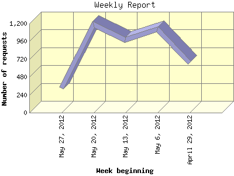

The Weekly Report identifies the activity for each week within the report
time frame. Remember that one page hit can result in several server requests
as the images for each page are loaded.
Note: Depending on the
report time frame for this report the first and last week may not represent
a full seven day week, resulting in lower hits.

| Week beginning | Number of requests | Number of page requests | |
|---|---|---|---|
| 1. | April 29, 2012 | 673 | 181 |
| 2. | May 6, 2012 | 1,125 | 248 |
| 3. | May 13, 2012 | 978 | 256 |
| 4. | May 20, 2012 | 1,181 | 297 |
| 5. | May 27, 2012 | 335 | 91 |
Most active week beginning May 20, 2012 : 297 pages sent. 1,181 requests handled.
Weekly average: 214 pages sent. 858 requests handled.
This report was generated on May 30, 2012 07:23.
Report time frame May 1, 2012 01:44 to May 29, 2012 20:49.
| Web statistics report produced by: analog 6.0 / Report Magic 2.21 |